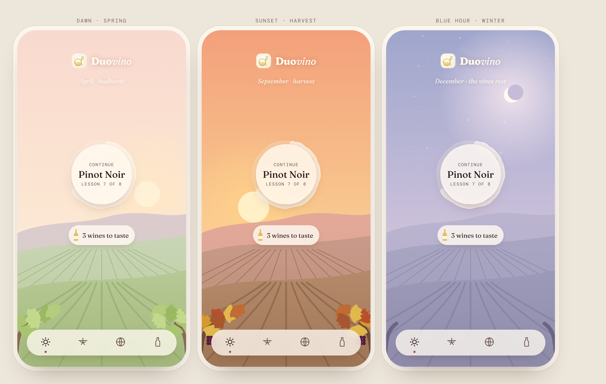
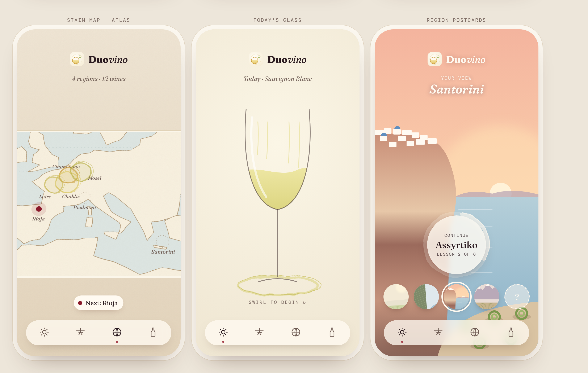

Duovino · home screen ideas
On a phone, swipe sideways across each picture to see all three screens.
1 · The living sky
Dawn in spring · sunset at harvest · blue hour in winter. It follows the season and the time of day.

2 · Stain map · Today's glass · Region postcards
A map with ring stains where you've been · one glass you swirl to begin · landscapes you unlock and choose as your home view.
